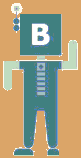

Каланки, а также горные пляжи и прогулки

Одни из самых красивых прогулок вдоль моря и пляжей - это так называемые каланки. Каланки - это маленькая и уютная версия норвежских фьордов. Типичная каланка представляет собой узкий (иногда извилистый) залив с водой красивого лазурного цвета, окружённый живописными скалами.
Больше всего каланок находятся между Тулоном и Марселем. В некоторых из них есть пещеры где остались следы первобытных людей. Кроме Тулона и Марселя, каланки встречаются недалеко от Канн и Фрежюса (там где к морю подходит необычно-красный горный массив Эстерель).
Ближе к Италии (Антиб, Кань-сюр-мер, Ницца, Ментон) каланок нет. Но здесь можно тоже найти одни из лучших гоных прогулок вдольморя и, конечно, пляжи - как пляжи с красивым дном для снорклинга (рыбы, подводные валуны, обросшие водорослями), так и мягкие песочные пляжи с площадками для игр, киосками и ресторанами.
Также на Лазурном берегу можно найти места с хорошими волнами - чтобы попробовать винсёрфинг или просто прокатиться на волне лёжа на пенопластовой доске (детский сёрфинг).
Мы можем сдать оборудование для снорклинга (маску, трубку, ласты), зонтики, доски для детского сёрфинга, а также обучить виндсёрфингу.
Чтобы поделиться информацией о пляжах, каланках и прогулках по берегу (поделившимся - скидка на эту экскурсию), а также узнать что сейчас на фотографии, жмите на свою соцсеть:
вКонтакте:. Facebook:
 .
МойМир(mail.ru):
.
МойМир(mail.ru): .
Одноклассники:
.
Одноклассники: .
Twitter:
.
Twitter: .
.
 planetmail.com.
planetmail.com.